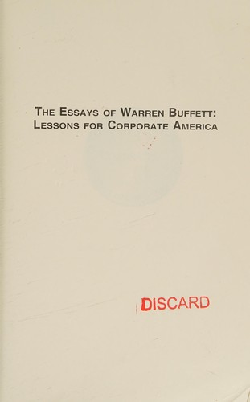

沃伦·巴菲特（Warren E. Buffett）自1956年创立巴菲特合伙公司起，每年坚持向股东撰写一封详尽的年度信函，这一习惯延续至今已逾六十年，是商业史上持续时间最长、内容最丰富的企业主致股东通信之一。劳伦斯·坎宁安（Lawrence A. Cunningham）是乔治·华盛顿大学法学教授，专注于公司治理与证券法研究。1996年，坎宁安将历年巴菲特股东信中的精华按主题重新编排整合，出版了《巴菲特致股东的信》初版，此后随巴菲特持续更新，历经多次修订，目前已出版至第八版。这本书并非巴菲特传记，而是由巴菲特本人的文字构成，坎宁安扮演的是编辑与组织者的角色。
全书按主题而非年份编排，分为公司治理、财务与融资、投资替代品、普通股、并购、估值与会计、税务等板块。在公司治理部分，巴菲特阐述了他对"所有者导向"公司文化的理解：董事会应真正代表股东利益，CEO的薪酬应与长期业绩挂钩，而非与股价短期波动挂钩。在普通股部分，巴菲特以内布拉斯加家具城（Nebraska Furniture Mart）等真实案例阐明选股标准：寻找有持久竞争优势（护城河）、诚实且有能力的管理层、以及合理估值的企业。在估值部分，他详细讲解内在价值、所有者收益的计算方法，并对会计准则提出批评——GAAP数字有时会遮蔽而非揭示企业的真实经济状况。书中随处可见巴菲特式的幽默与自嘲，使严肃的商业议题读来如沐春风。
这本书在全球投资界拥有无可替代的地位。哥伦比亚大学商学院院长格伦·哈伯德（Glenn Hubbard）称其为"理解巴菲特思想的最佳入口"。坎宁安将此书译成十余种语言，中文版《巴菲特致股东的信》由机械工业出版社出版，书名在中国大陆已成为价值投资的代名词。巴菲特本人在2020年的伯克希尔股东信中专门提及坎宁安的著作《Margin of Trust》，表达了对坎宁安工作的认可，也间接证明了他对这套合作项目的珍视。值得一提的是，巴菲特从未为此书的出版收取任何版税，他认为广泛传播股东信的思想，比稿费回报更有意义。
对于关注商业与投资的读者而言，《巴菲特致股东的信》的不可替代性在于它的真实性——这不是他人对巴菲特的二手解读，而是巴菲特六十余年来面对股东时真实的思考记录。无论是对公司治理的锐评、对会计操纵的警示、对并购陷阱的剖析，还是对长期持有优质企业的笃定，每一段文字背后都有数十年实战的支撑。这本书与本杰明·格雷厄姆的《聪明的投资者》并列，是价值投资体系中最重要的两本一手文献，区别在于格雷厄姆提供了理论框架，而巴菲特展示了如何在现实世界中将其演化与应用。